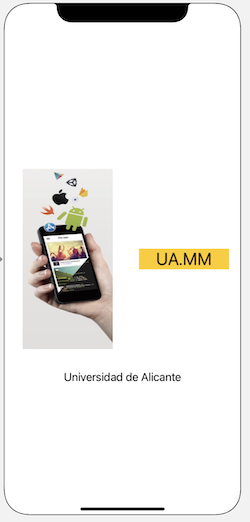

Ejercicios de Autolayout (1,5 puntos)¶
El objetivo es añadir autolayout a la aplicación de “pioneras” que hicimos en sesiones anteriores para que la interfaz se vea correctamente en todos los modelos de iPhone.
Pantalla inicial (0,5 puntos)¶
Incluye los tres botones de la pantalla principal en un stack view vertical para que estos aparezcan con el mismo tamaño (consulta la sección de stack view de los apuntes)
Una vez hecho esto, haz que ocupen toda la pantalla sea cual sea la resolución. Lo más sencillo es poner distancia 0 del stack view a los 4 bordes.
Pantalla secundaria (0,5 puntos)¶
Añadid restricciones a la pantalla secundaria (la que muestra información sobre cada pionera). Se deben cumplir las siguientes condiciones aproximadamente:
- El text view debe aparecer centrado horizontal y verticalmente. Debes fijar además o bien su tamaño o bien la separación con los bordes, queda a tu elección.
- El botón debe aparecer en la parte inferior de la pantalla, a una distancia fija del borde (la que quieras), y centrado horizontalmente.
Launch Screen (0,5 puntos)¶
Haz un LaunchScreen.storyboard que quede como el de la siguiente imagen (mis disculpas a todos los diseñadores de interfaces :)):

- La imagen la puedes descargar de aqui. Crea un nuevo "image set" en el assets llamado "logo" y arrástrala allí
- La
Image Viewtiene como image al "logo" y como content mode "aspect fit", para que no se deformen las proporciones - Tanto la imagen como el label "MM.UA" están centrados en vertical
- La imagen debe tener un aspect ratio de 1:2
- La imagen y el label "MM.UA" deben tener el mismo ancho (selecciona las dos clicando en cada una y manteniendo la tecla
Cmd, y luego en el tercer botón de autolayout - "Add new constraints" tienes la restricción de "equal widths") - La imagen está a 24 puntos del borde izquierdo, el label "MM.UA" a 24 del derecho y entre la imagen y el label también hay 24 puntos
- El label "Universidad de Alicante" está centrado en horizontal y a una distancia de 32 puntos del borde inferior de la imagen
{kind=link}